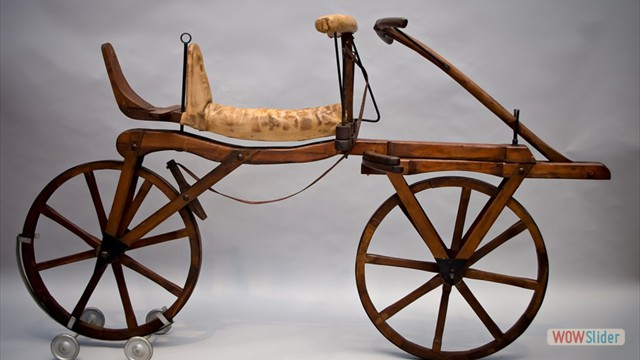
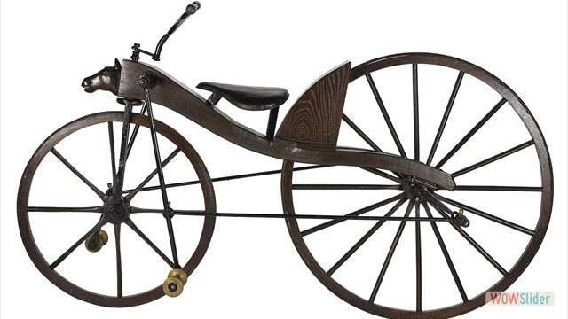
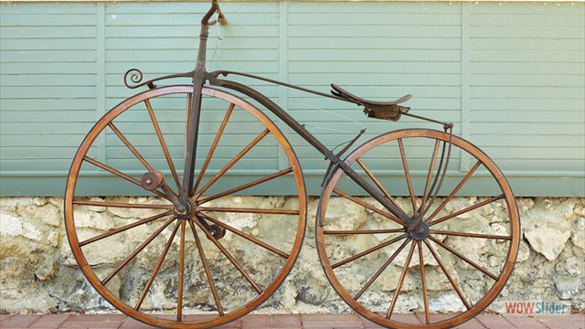
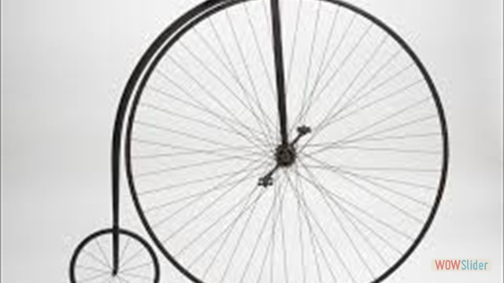
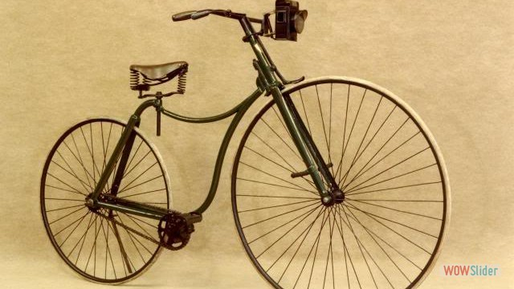
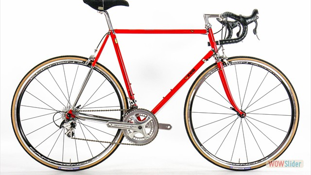
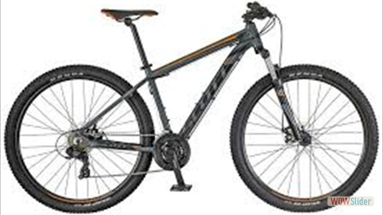

Historia de la Bicicleta
- 
- 
- 
- 
- 
- 
- 
Historia de la Bicicleta
Lo único que está claro es que la bicicleta es un invento europeo. Dependiendo de lo que consideremos una bicicleta existen unas fechas u otras, siendo la primera bicicleta a pedales patentada como tal y a partir de la cual ha evolucionado la industria en el siglo XX la del británico John Kemp Starley en 1885, si bien es cierto que se basó en los modelos europeos construidos a lo largo de todo el siglo XIX.
Existe la creencia de que Leonardo Da Vinci creó el primer boceto en papel de una bicicleta (¡que incluía hasta la cadena de transmisión!) a finales del siglo XV, pero el investigador alemán Hans-Erhard Lessing demostró en 1997 que el diseño se introdujo en los documentos de Leonardo a partir de 1961. También a finales del siglo XVIII, un francés, el conde de Sivrac habría inventado el celerífero, un primitivo cuadro sobre dos ruedas con una cabeza de animal, pero autores como Max Rauck, Gerd Volke y Felix Paturi han desmentido esta fecha atribuyéndola a antiguas rivalidades nacionalistas entre franceses y alemanes.
En 1816, Karl Dreis, inventor y aristócrata alemán creó lo que sería el primer vehículo dirigible con dos ruedas en linea. No tenía ni pedales, ni cadenas, ni frenos, sino que avanzaba y frenaba con los pies, pero sí tenía las ruedas, el sillín, el manillar, el cuadro y un sistema de dirección bastante más aparatoso que el que hoy conocemos. Dreis pensaba que su “máquina de correr” o laufmaschine, como la bautizó revolucionaría el transporte de su época, pero no pasó de ser una máquina recreativa muy poco utilizada, aunque sirvió como prototipo para otros posteriores.
En 1839 el herrero escocés Kirkpatrick Macmillan añadió pedales con barras a un prototipo. Estas innovaciones permitieron al ciclista impulsar la máquina con los pies sin tocar el suelo. El mecanismo de impulsión consistía en pedales cortos fijados a la rueda trasera y conectados por barras a unos pedales situados delante del ciclista. Era impulsada por el empuje de los pies hacia abajo y hacia adelante. La utilizó para realizar viajes dentro de su Escocia natal, pero no llegó a patentar ni vender su invento, por lo que ante la falta de evidencias documentales de esas fechas siempre ha habido escepticismo al rededor de la fecha concreta de creación.
En 1845 el escocés Robert William Thomson sustituyó las ruedas hechas completamente de madera por unos neumáticos inchables que combinaban cuero y goma, y cuyos remaches le daban tracción al conjunto, aunque su invento cayó en desuso y solo se usó durante algunos años en carruajes.
En 1861, Ernest Michaux decidió dotar de unos pedales a la rueda delantera de una vieja draisiana, por lo que el nuevo invento requería de más equilibrio. Se reconoce a Michaux como el precursor directo de la bicicleta aunque se deben citar nombres como Philip Moritx o Galloux que construyeron bicicletas a pedales para uso particular. El invento de Michaux, la “Michaulina” se empezó a producir en serie atrayendo la atención de las clases populares y este modelo se hizo muy popular en Francia. El cuadro y las ruedas se fabricaban en madera, y estas última llevaban una banda de hierro que era la que tocaba el suelo. Los pedales estaban colocados en la delantera, que era un poco más alta que la rueda de atrás.
En 1869, en Gran Bretaña se introdujeron los neumáticos de goma maciza montados en el acero.
En 1873 James Starley, un inventor inglés, produjo la primera máquina con casi todas las características de la famosa bicicleta de rueda alta. La rueda delantera de la máquina de Starley era tres veces más grande que la de atrás. Su uso se hizo muy popular durante la década de las 70 y los 80, tanto que en enero de 1887, el norteamericano Thomas Stevens realiza el primer viaje en bicicleta alrededor del mundo. Partió de San Francisco y regresó a la misma ciudad después de pedalear durante más de tres años.
En 1885, John Kemp Starley crea la “bicicleta de seguridad” o Safety Bicycle, muy parecida a una bicicleta urbana actual. Tenía frenos y la postura era mucho más cercana al suelo, de ahí su nombre. Se añadieron poco después, en 1888, los neumáticos con cámara de airedesarrollados por el irlandés John Boyd Dunlop, cuyo tubo interior se rellena de aire amortiguando parte del golpeteo contra los caminos. Las ruedas eran casi del mismo tamaño y los pedales, unidos a una rueda dentada a través de engranajes y una cadena de transmisión, movían la rueda de atrás. La bicicleta de seguridad se extendió rápidamente por todo el mundo industrializado y su precio gracias a la fabricación en serie se fue abaratando cada vez más.
En Francia, los hermanos Michelín crearon un neumático desmontable y en Italia, Giovanni Battista Pirelli hizo lo propio. Con el neumático y unas cuantas cámaras de recambio se podía ir a todas partes. Las bicicletas de entonces pesaban entre 18 y 20 kilos.
El 31 de mayo de 1889 nació oficialmente el ciclismo de competición. Los hermanos Olivier , asociados de la fábrica de Michaux, organizaron una carrera en el parque de Saint Cloud de París con 1200 metros de recorrido en la que tomaron parte unos pocos ciclistas. A partir de entonces comenzó la fiebre del ciclismo. En el aspecto técnico se investigaba a marchas forzadas para encontrar nuevas soluciones. La velocidad se convirtió en una obsesión en detrimento del peso, el equilibrio o la seguridad. Los fabricantes tendieron a homogeneizar sus máquinas y las descomunales ruedas delanteras se redujeron a un diámetro de 80 centímetros. Estos inventos, junto con el uso de tubos de acero soldados y los asientos de muelles, llevaron a la bicicleta a la cumbre de su desarrollo.
A principios del siglo XX nacerían las primeras competiciones nacionales de gran nivel, como el Tour de Francia, o el Giro de Italia pero todos los avances surgidos desde el siglo XIX contribuyeron a crear la bici tal y como la conocemos hoy.


.jpg)


.png)
.png)
.png)